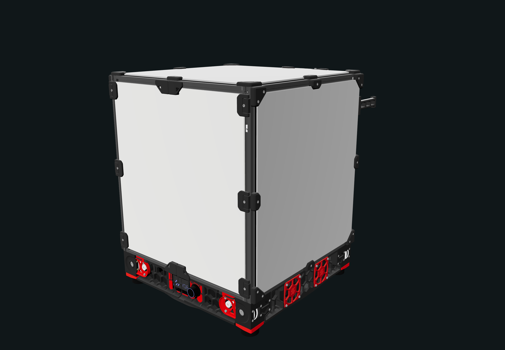
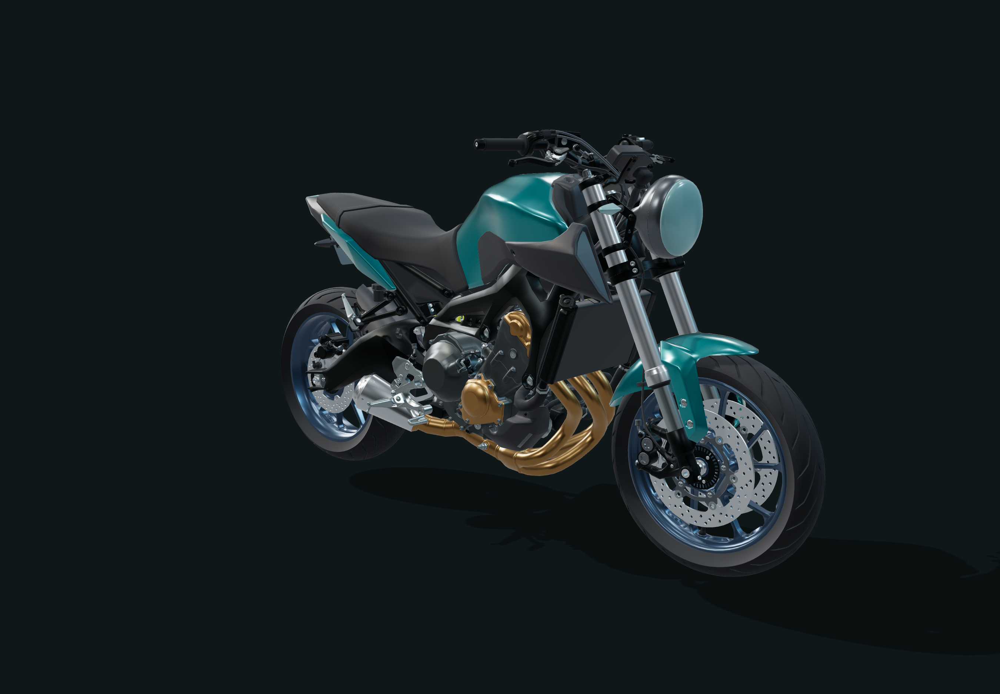
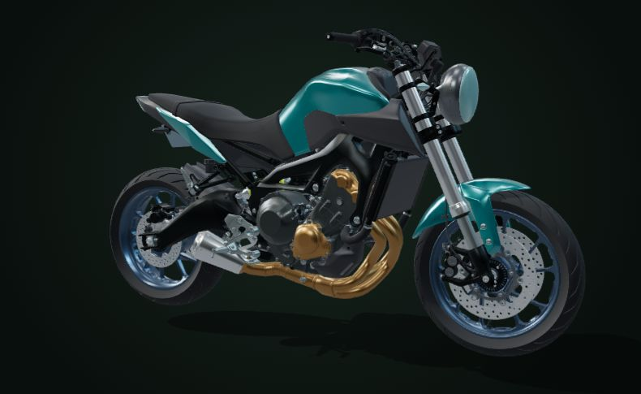
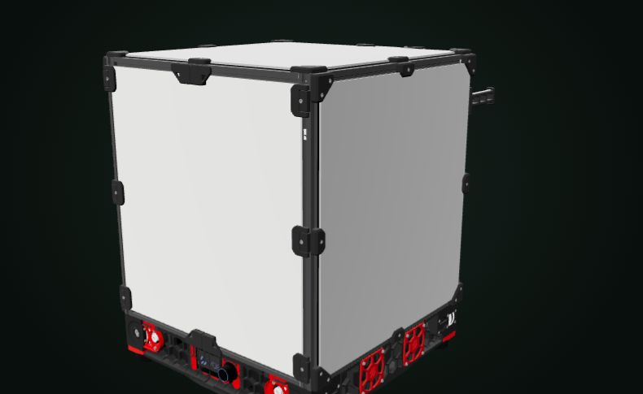

从熟悉的产品开始
选一件感兴趣的产品，看看里面藏着什么。
产品拆解 · 3D

↗
VORON 2.4 · 3D 打印机
打印头怎样精准地到达每个位置？
探索平面驱动、升降与送料结构。
产品探索 · 3D

↗
三缸裸街摩托车
外观之下，部件怎样排布？
旋转观察现有模型，展开各个网格组。
概念渲染 · 自动化
六轴工业机械臂
关节、连杆与末端执行器 · 灵感预览
即将探索 / 暂未接入拆解这些运动，是怎样实现的？
先看动作，再认识它的名字。
把复杂留给机械，把好奇留给你。
从完整产品，到运动原理
看见结构，理解运动。
拆开一件产品，看清部件如何配合，让想法开始运动。

01 / STREET TRIPLE
三缸裸街摩托车
从油箱、车架到链条与制动，看懂一辆车的机械联系。
拆开摩托车 →
02 / VORON 2.4
VORON 3D 打印机
观察平面驱动、龙门升降与送料，探索精密装配。
拆开打印机 →INTENT → MECHANISM
不知道名称，也能从动作开始。
把目标动作和使用条件说清楚，再比较候选机构的输入、输出与限制。
符合条件的机构
EXPLAIN THE MOTION
知识与模型依据
演示为理想运动学，未计算载荷、摩擦、强度、碰撞和安全性。锁止与制造可行性需要人工校核。